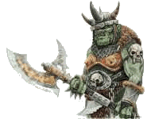
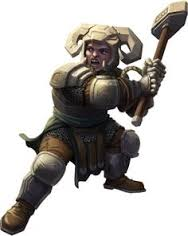

| Aussehen | Beschreibung |
|---|---|
|  |
Größe – 170 bis 185 cm. Junge Kämpfer wiegen – 70 bis 85 kg, ältere Kämpfer – 120 bis 135 kg. Sergeants und Offiziere sind größer als Soldaten, Größe und Gewicht wachsen mit dem Dienstgrad. Die Hautfarbe ist grün, die Haare sind schwarz, die Augen sind rot oder gelb. Die Ohren sind spitz, die Zähne sind scharf und lang. Die Körperbehaarung ist schwach ausgeprägt. Orks sind Fleischfresser, können mehrere Tage ohne Nahrung auskommen, ohne an Kondition zu verlieren. Die Schmerzgrenze ist hoch, die Ausdauer ist sehr groß, Orks können ab dem Alter von 2 Jahren in den Militärdienst eintreten. |
|  |
Größe - 120 bis 140cm. Zwerge wiegen 100 bis 150kg, wobei ältere Zwerge häufig stark an Gewicht zulegen.
Zwerge können bis zu 150 Jahre alt werden.
Ausgewachsene Zwerge haben Bärte von bis zu 1m Länge, häufig in schwarz oder in Brauntönen.
Zwerge sind sehr widerstandsfähig und können schwere Lasten über weite Strecken tragen.
|